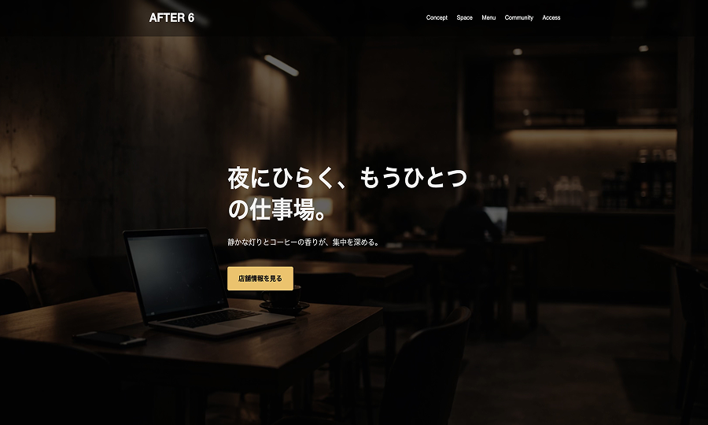

カフェサイト
架空のカフェを想定したコーポレートサイトです。 店舗の雰囲気が自然に伝わることを重視して設計しました。
制作概要
- 想定：20代後半〜40代の、落ち着いた空間を好む層向けのカフェ
- 目的：店内の雰囲気が伝わり、来店イメージを持ってもらう
- 担当範囲：デザイン / コーディング
- 制作期間：4日
工夫したポイント
- 写真を大きく配置し、店内の落ち着いた雰囲気が直感的に伝わる構成にしました
- 余白を多めに取り、ゆったりとした印象になるようデザイン
- 初めて訪れる人でも情報を把握しやすいシンプルなレイアウトにした
使用技術
HTML / CSS / Responsive
← Works一覧に戻る